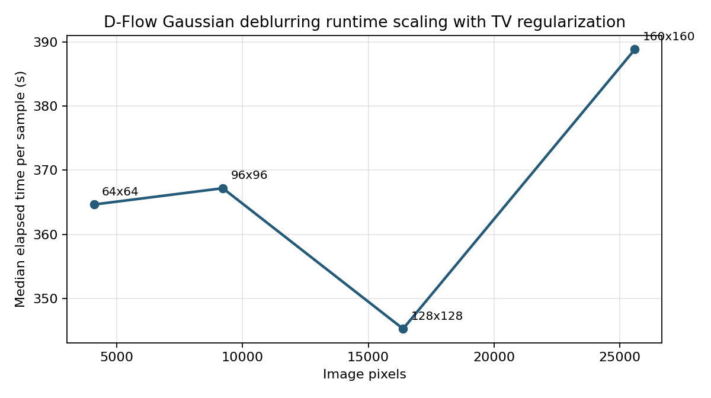
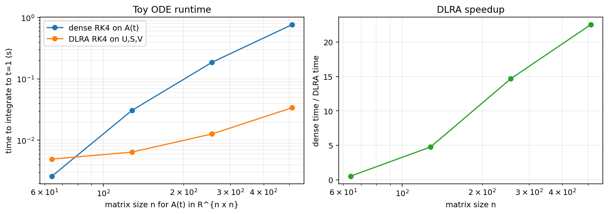

D-Flow / Dynamic Low Rank Completion Report
Local report generated from repository artifacts. Updated with MathJax equations and loss-selected samples.
1. TV-Regularized D-Flow Inverse Problem
The Gaussian deblurring benchmark optimizes the source variable through D-Flow with total variation regularization to discourage oscillatory reconstructions when the blurred measurement residual is already small.
The stopping rule remains tied to measurement MSE, not the regularized objective.
Optimizer And D-Flow Settings
| Setting | Value |
|---|---|
| Forward operator | Separable Gaussian convolution blur |
| Blur sigma | 5.0 |
| Circle count | 1 |
| Samples per resolution | 30 |
| D-Flow Euler steps | 5 |
| Optimizer | LBFGS on source variable z |
| LBFGS learning rate | 1.0 |
| LBFGS max_iter | 20 |
| LBFGS history size | 25 |
| Max outer steps | 300 |
| Stop loss | 1e-12 |
| TV weight | 1e-05 |
| TV epsilon | 1e-06 |
| Device | cuda:1 |
Model Training Provenance
| Resolution | Epochs | Batch | LR | WD | EMA | Eval Euler steps | Parameters |
|---|---|---|---|---|---|---|---|
| 64x64 | 50 | 512 | 2.0e-04 | 1.0e-04 | 0.999 | 200 | 2,705,517 |
| 96x96 | 50 | 512 | 2.0e-04 | 1.0e-04 | 0.999 | 200 | 2,705,517 |
| 128x128 | 50 | 512 | 2.0e-04 | 1.0e-04 | 0.999 | 200 | 2,705,517 |
| 160x160 | 50 | 512 | 2.0e-04 | 1.0e-04 | 0.999 | 200 | 2,705,517 |
2. Runtime Scaling: 64, 96, 128, 160
The TV-regularized benchmark completed 30 samples per resolution. best_loss is the best measurement-space MSE; best_objective is measurement MSE plus the TV penalty.
| Resolution | n | Total time (s) | Mean time (s) | Median time (s) | Shortest (s) | Longest (s) | Mean best MSE | Median best MSE | Mean best objective | Median best objective | Median final TV | Non-finite final TV |
|---|---|---|---|---|---|---|---|---|---|---|---|---|
| 64x64 | 30 | 10,855.0 | 361.8 | 364.7 | 348.2 | 370.2 | 4.942e-07 | 4.675e-10 | 3.633e-06 | 1.534e-07 | 1542.713882 | 2 |
| 96x96 | 30 | 11,282.5 | 376.1 | 367.2 | 347.0 | 755.8 | 8.397e-06 | 4.140e-10 | 5.950e-05 | 7.024e-08 | 0.007219 | 1 |
| 128x128 | 30 | 13,884.3 | 462.8 | 345.3 | 343.6 | 1,142.0 | 1.310e-08 | 1.822e-10 | 7.127e-08 | 4.626e-08 | 0.004689 | 1 |
| 160x160 | 30 | 15,725.7 | 524.2 | 388.8 | 380.4 | 1,368.5 | 6.189e-09 | 3.699e-10 | 4.671e-08 | 3.614e-08 | 0.003779 | 0 |

Representative TV-Regularized Reconstructions


Samples By Loss: Best / Median / Mean-Nearest / Worst
For each resolution, the columns show the saved diagnostic figure whose best_loss is minimum, closest to the median, closest to the mean, and maximum among the 30 samples.

best MSE=7.942e-11
objective=1.410e-07
elapsed=367.0 s

best MSE=4.521e-10
objective=1.154e-07
elapsed=352.5 s

best MSE=3.662e-07
objective=6.026e-07
elapsed=368.1 s

best MSE=6.631e-06
objective=9.474e-05
elapsed=352.4 s

best MSE=6.702e-11
objective=5.516e-08
elapsed=347.0 s

best MSE=2.630e-10
objective=3.843e-08
elapsed=373.8 s

best MSE=9.465e-07
objective=1.057e-06
elapsed=371.5 s

best MSE=2.503e-04
objective=0.001781
elapsed=370.8 s

best MSE=7.217e-11
objective=2.902e-08
elapsed=344.0 s

best MSE=1.820e-10
objective=3.510e-08
elapsed=344.8 s

best MSE=8.702e-09
objective=8.161e-08
elapsed=1,134.8 s

best MSE=3.004e-07
objective=4.332e-07
elapsed=364.1 s

best MSE=5.709e-11
objective=2.117e-08
elapsed=382.5 s

best MSE=3.325e-10
objective=3.778e-08
elapsed=580.0 s

best MSE=4.142e-09
objective=6.918e-08
elapsed=391.3 s

best MSE=8.887e-08
objective=1.781e-07
elapsed=1,021.2 s
3. DLRA Toy ODE
The DLRA toy problem uses the linear matrix ODE
The solution is guaranteed to remain low rank by choosing the initial condition \(A(0)\) to have rank \(r\). This is not done by making \(L\) or \(R\) low rank. In the implementation, \(L\) and \(R\) are full \(n\times n\) generator matrices built as a random skew-symmetric rotation term plus a smaller symmetric growth/decay term. Since \(e^{tL}\) and \(e^{tR}\) are invertible for all finite \(t\), multiplication by them preserves rank:
The exact-low-rank experiment in dlra/toy_low_rank_ode.py uses matrix size \(A(t)\in\mathbb{R}^{40\times 40}\) with rank \(r=4\). The initial matrix is constructed as
where \(W_1\) and \(W_2\) are random orthonormal bases from QR factorizations, \(\sigma_i=0.5^i\), and all singular values after the first \(r\) are set to zero in the exact-low-rank case. The approximate-low-rank case keeps a decaying full spectrum instead.
The implementation evolves \(Y(t)=U(t)S(t)V(t)^\top\) directly on the rank-\(r\) manifold using projected factor ODEs and QR re-orthonormalization.

DLRA Timing Test
To test efficiency, dlra/benchmark_dlra_timing.py compares dense RK4 integration of the full matrix \(A(t)\) to an optimized DLRA RK4 integration of only \(U,S,V\) for the same ODE up to \(t=1\). The timing benchmark uses exact rank-r initial data, rank \(r=8\), and 25 time steps. The DLRA side uses skinny products for the linear operator instead of forming the full dense state.
| Matrix size | Rank | Dense RK4 time (s) | DLRA time (s) | Speedup | Endpoint rel. error |
|---|---|---|---|---|---|
| 64x64 | 8 | 0.0026 | 0.0050 | 0.5x | 6.38e-05 |
| 128x128 | 8 | 0.0307 | 0.0064 | 4.8x | 6.41e-05 |
| 256x256 | 8 | 0.1863 | 0.0127 | 14.7x | 6.47e-05 |
| 512x512 | 8 | 0.7633 | 0.0339 | 22.5x | 5.19e-05 |

22.5x speedup at \(512\times512\) with endpoint relative error around 5e-05.4. Dynamic Low Rank D-Flow
The implementation in dlr_dflow/dlr_dflow_demo.ipynb approximates the sensitivity of the pretrained flow
For the Gaussian deblurring objective
the exact source gradient is \(J_1^\top g_x\). The notebook uses a scalar baseline and rank-\(r\) residual,
The scalar baseline follows average log-volume change,
with the trace estimated by Hutchinson probes. The residual factors are advanced by a first-order Lubich-Oseledets K/S/L projector-splitting update. Only skinny products \(A_tQ\) and \(A_t^\top Q\) are evaluated through batched JVPs and VJPs; the full image-by-image Jacobian is never formed.
Implemented Outer Update
- At the first optimizer iteration, initialize a random rank-\(r\) basis and a small core \(S_0=\varepsilon I\).
- At later iterations, use the previous approximate source gradient as a source-time basis seed, while resetting the core near zero so that \(J_0\approx I\).
- Integrate the flow state and low-rank factors together once from \(t=0\) to \(t=1\).
- Compute \(g_x\) at that endpoint, apply the approximate transpose sensitivity, and update \(z\) with Adam.
- After \(z\) changes, reinitialize and re-evolve the factors along the new trajectory.
Validated Sensitivity Diagnostic
The saved diagnostic compares the low-rank action with autograd through the same 15-step Euler flow for one source, observation, and endpoint-gradient direction. Its factor basis is deliberately seeded with that tested direction, so this is a targeted action test rather than an unbiased test of a reusable full sensitivity operator.
| Approximation | Relative action error | Cosine | Interpretation |
|---|---|---|---|
| JVP/VJP self-test | JVP: 2.41e-05 adjoint: 1.16e-04 | - | The skinny Jacobian products agree numerically with autograd. |
| Identity baseline | 12.184 | - | The identity substantially overestimates this tested source-gradient action. |
| Scalar baseline | 0.906 | not recorded | Average-volume scaling corrects much of the magnitude error but leaves directional structure unresolved. |
| Scalar + rank 2 | 0.645 | 0.769 | The targeted low-rank residual produces the largest improvement. |
| Scalar + rank 4 | 0.625 | 0.795 | Increasing rank gives a smaller additional improvement. |
| Scalar + rank 8 | 0.615 | 0.808 | This is the best relative error in the saved rank test. |
| Scalar + rank 16 | 0.625 | 0.808 | The result saturates for this tested action; more rank does not improve it. |
Inverse-Solve Status
The figure below is retained only as an archived result from the earlier endpoint-gradient-seeded implementation. That run used rank 8, Adam learning rate 0.1, and 500 outer steps; it reported best measurement MSE \(1.354\times10^{-7}\) and clamped image MSE \(4.786\times10^{-6}\). Those values demonstrate that the earlier heuristic could solve this one controlled sample, but they are not results of the corrected source-gradient warm start.

Artifacts
- TV benchmark stats:
outputs/dflow_scalability_tv_64_96_128_160/dflow_blur_scalability_stats.json - TV benchmark script:
scripts/benchmark_dflow_blur_scalability.py - DLRA toy:
dlra/toy_low_rank_ode.py,dlra/dlra.py,dlra/benchmark_dlra_timing.py,dlra/outputs/dlra_timing.csv - DLR-D-Flow:
dlr_dflow/dlr_dflow.py,dlr_dflow/run_dlr_dflow.py,dlr_dflow/dlr_dflow_demo.ipynb, anddlr_dflow/dlr_dflow_notes.md
Total TV benchmark wall time recorded in JSON: 51,857.8 seconds.